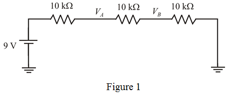
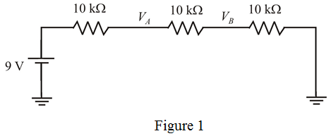
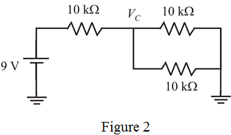
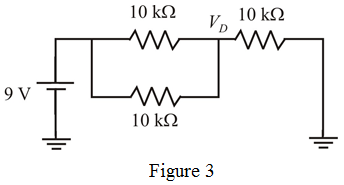
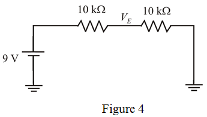

Each resistor value is 
Battery voltage is  .
.
(i)
Connect all the resistors in series as shown in Figure 1.

Each resistor value is
Battery voltage is .
(i)
Connect all the resistors in series as shown in Figure 1.

Calculate the voltage, using voltage divider rule.

Calculate the equivalent output resistance.
Therefore, the output resistance,  is .
is .
Calculate the voltage, using voltage divider rule.
Calculate the equivalent output resistance.
Therefore, the output resistance,  is .
is .
(ii)
Draw the circuit diagram with series parallel resistors.
These are two cases,
Case (a):

Calculate the voltage, using voltage divider rule.
Calculate the equivalent output resistance.
Therefore, the output resistance, is .
Draw the circuit diagram with series parallel resistors.

Calculate the voltage, using voltage divider rule.
Calculate the equivalent output resistance.
Therefore, the output resistance, is .
(iii)
Connect two resistors in series as shown in Figure 4.

Calculate the voltage, using voltage divider rule.
Calculate the equivalent output resistance.
Therefore, the output resistance,  is .
is .
Therefore, the list of positive sources are .
For generating  and , the case (ii) is better than case (i), because it has low
and , the case (ii) is better than case (i), because it has low
output resistance.